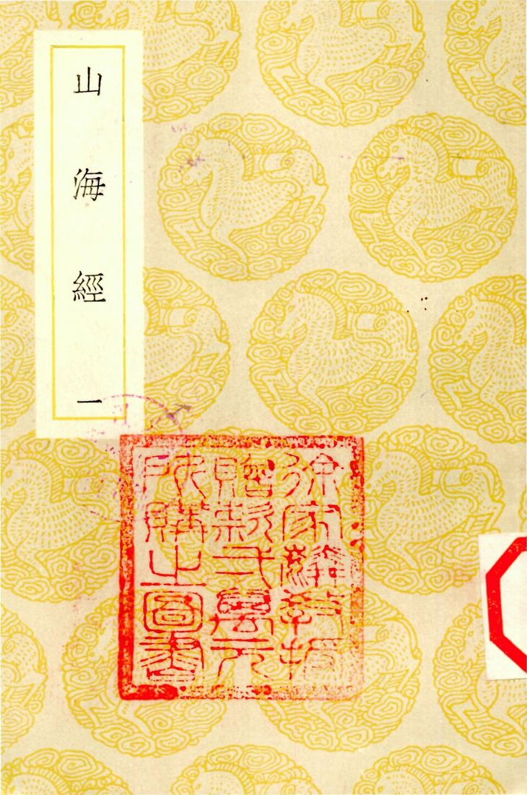
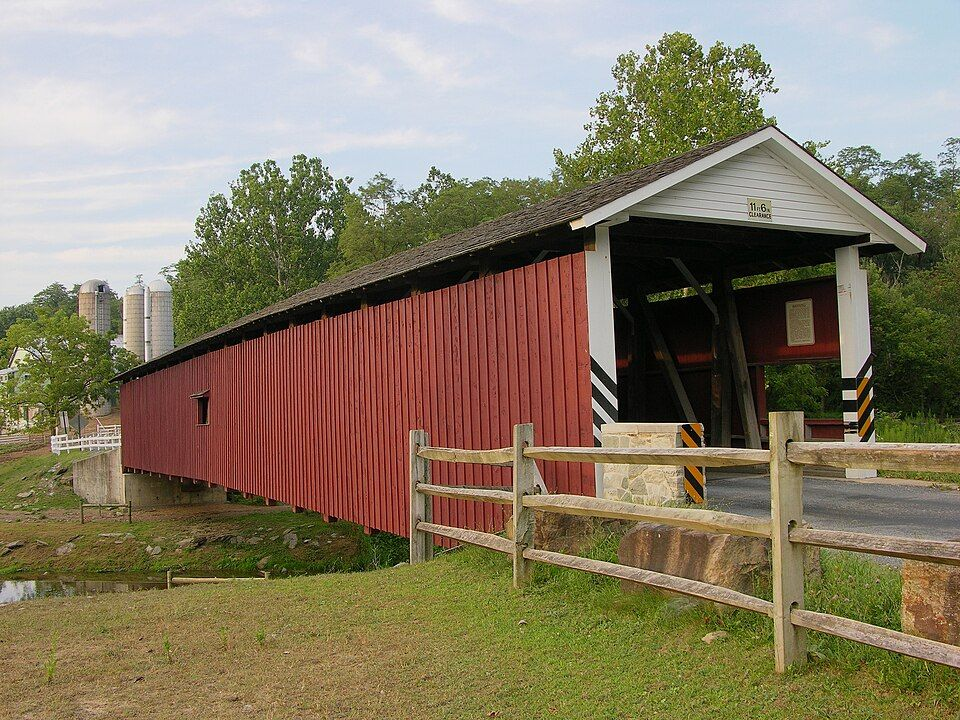
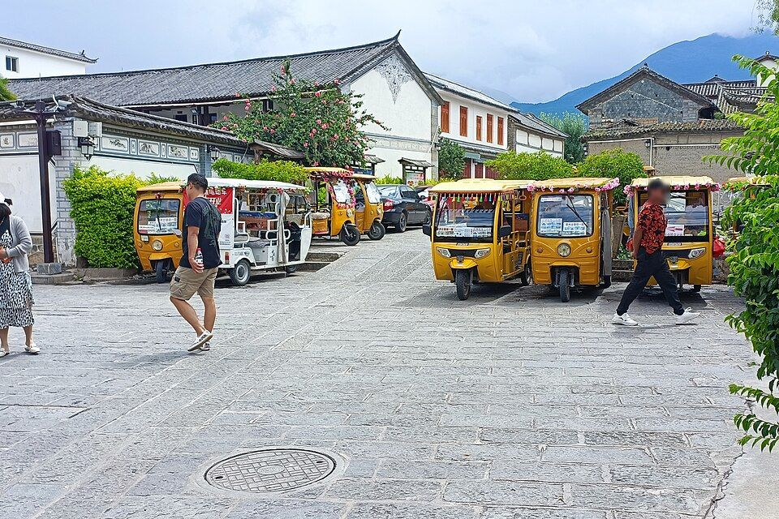
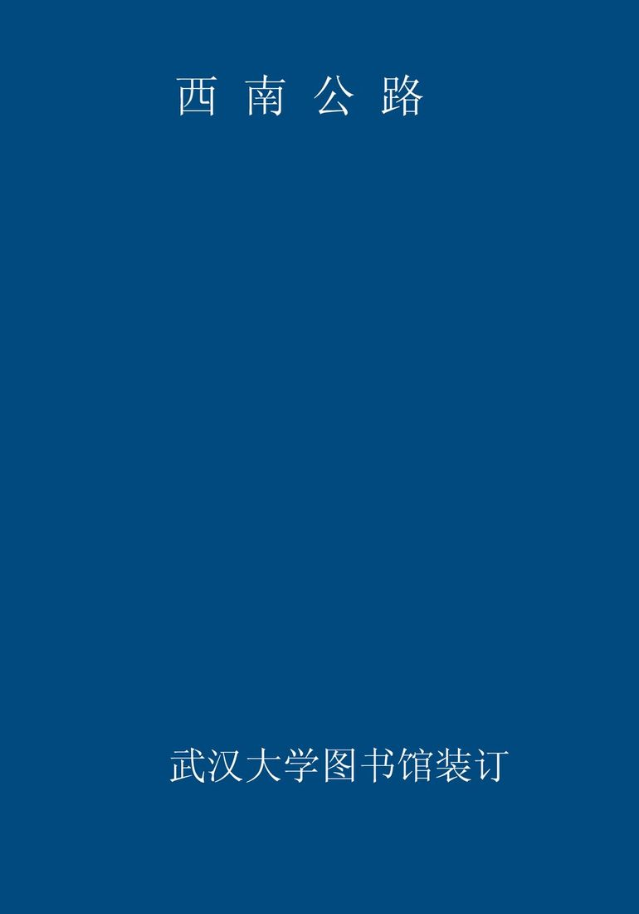
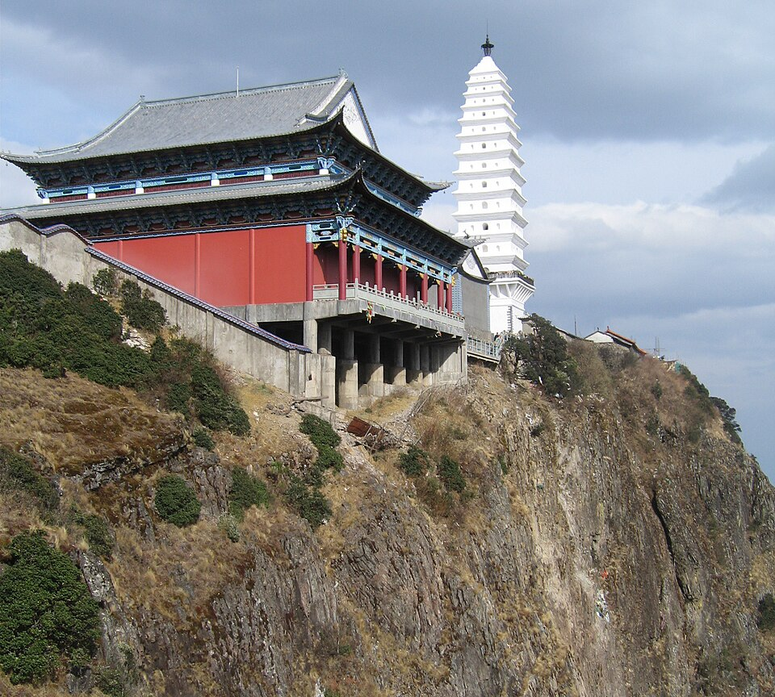
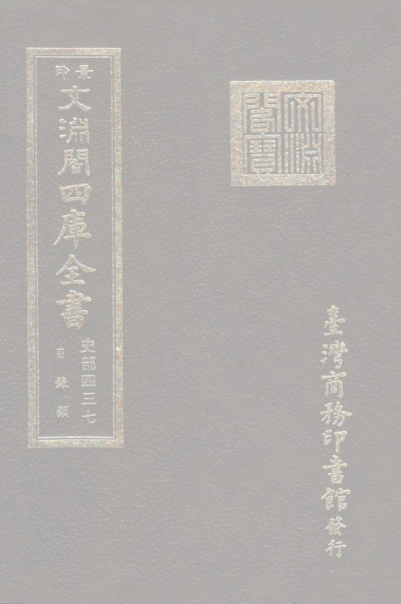
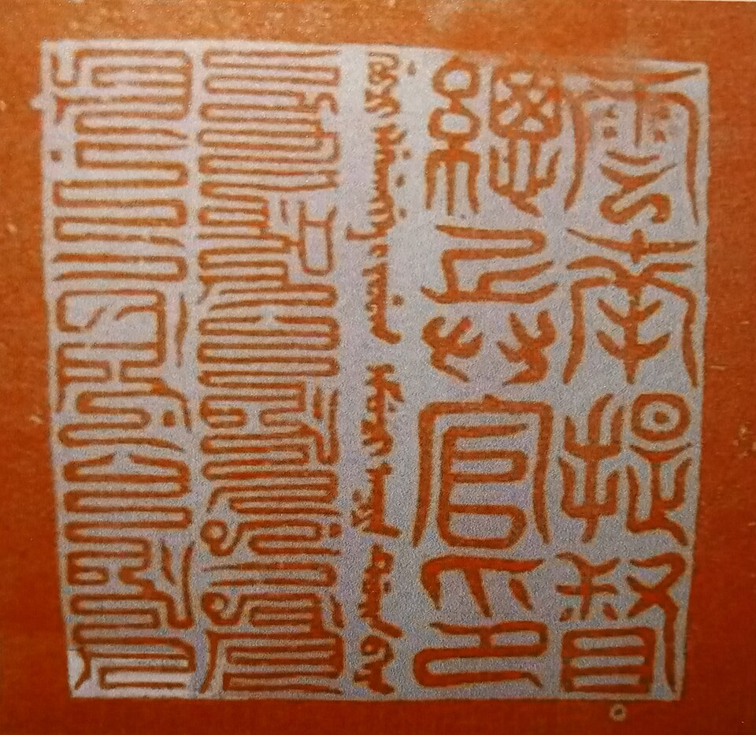

所在云南
适宜季节11 月至次年 3 月
建议天数2-3 天
资料状态资料待复核
动态信息出行前复核：门票、开放时间与预约规则会变化，请以官方渠道为准。
先看结论4
快速决策索引4
全年月份速查12
1月
2月
- 食物
- 热饵丝、砂锅鱼、酸辣鱼、乳扇、白族三道茶
3月
- 食物
- 喜洲粑粑、凉鸡米线、乳扇、饵块
- 提醒
- 风大，骑行注意防晒和防风
4月
- 食物
- 白族菜、酸辣鱼、洱海海菜、雕梅扣肉
- 提醒
- 清明和五一前后人多，生态廊道热门点拥堵
5月
- 食物
- 乳扇、乳饼、喜洲粑粑、白族土八碗
6月
- 食物
- 凉米线、凉鸡米线、木瓜水、冰粉、烧烤
- 提醒
- 雨季开始，苍山和远郊山路注意降雨
7月
- 食物
- 凉鸡米线、烧烤、酸辣鱼、乳扇
- 提醒
- 暑期亲子和旅居客多，民宿提前订
8月
- 食物
- 野生菌火锅、白族菜、凉米线、烧烤
- 提醒
- 雨季看天气，洱海边骑行避开雷雨
9月
- 食物
- 新米饭、砂锅鱼、喜洲粑粑、烤乳扇
- 提醒
- 稻田收割窗口短，出发前看实时图
10月
- 食物
- 白族菜、土八碗、饵丝、乳扇、雕梅
- 提醒
- 国庆高峰避开热门村寨和双廊核心区
11月
- 最适合
- 洱海晴天、红嘴鸥回归、古城慢住、无量山冬樱前期
- 食物
- 砂锅鱼、烤乳扇、热饵丝、白族三道茶
- 提醒
- 早晚温差大，冬樱花期看当年公告
12月
- 食物
- 砂锅鱼、火塘菜、乳扇、饵块、热米线
季节限定景观8

景点营业时间和票价速查8
使用说明
- 以下为常见开放时间和成人基础票价，节假日、索道、观光车、游船、演出、特展会调整
- 开放式古镇、村寨、生态廊道多为免费，店铺、院落、停车、租车按各自收费
- 苍山索道、洱海游船、远郊景区价格动态较多，出发前看官方购票页
大理古城和周边
- 大理古城
- 开放式古城，全天可逛，个人游客免费；店铺和酒吧按各自营业
- 洋人街/人民路/复兴路
- 开放式街区，免费；店铺按各自营业
- 五华楼/南门/北门
- 开放式地标，免费；登楼或内部展览以现场公告为准
- 大理市博物馆
- 常见 9:00-17:00，凭有效证件免费领票参观；每日限流，以馆方公告为准
展开其余 4 项
- 大理州非遗博物馆
- 常见周二至周日 9:00-11:30、14:00-17:00，周一闭馆，免费或预约参观以馆方公告为准
- 大理州博物馆
- 常见周二至周日 9:00-17:00，周一闭馆，免费预约；节假日开放以公告为准
- 张家花园
- 常见 8:00-19:00，成人票常见 60 元左右；三道茶/演出以现场为准
- 天龙八部影视城
- 常见 8:30-17:30，成人票常见 40 元左右；演艺项目以景区公告为准
苍山片区
- 苍山景区
- 开放时间随索道和天气变化，苍山地质公园门票常见 35 元左右；索道另计
- 洗马潭索道
- 常见 8:30-16:00 左右，受大风和天气影响大；全程往返常见 300 元左右，半程价格以官方购票页为准
- 感通索道
- 常见 8:30-17:00 左右；往返常见 80 元左右，单程常见 50 元左右
- 中和索道
- 常见 8:30-17:00 左右；往返常见 60 元左右，单程常见 30 元左右
展开其余 3 项
- 玉带云游路
- 苍山步道，随索道/景区开放，免费或随苍山门票/索道进入
- 寂照庵/感通寺
- 寺院开放以现场公告为准，常见免费或随喜功德；斋饭以寺院当日安排为准
- 苍山徒步路线
- 开放和管控受天气影响，不建议无准备进山
三塔和北线
- 崇圣寺三塔文化旅游区
- 官方开放时间 7:30-18:30；成人票常见 75 元左右，电瓶车另计
- 蝴蝶泉公园
- 常见 7:30-18:00；旺季票常见 55 元，淡季票常见 40 元；电瓶车另计
- 周城扎染村
- 开放式村寨，免费；扎染体验按店铺收费
- 喜洲古镇
- 开放式古镇，免费；严家大院等院落单点收费
展开其余 2 项
- 严家大院博物馆
- 常见 8:30-18:00，成人票常见 20 元左右；以现场公告为准
- 海舌生态公园
- 开放和预约以当地公告为准，通常免费或预约入园；交通车/停车另计
洱海生态廊道和海西
- 洱海生态廊道
- 开放式生态廊道，全天可步行，免费；部分段落夜间照明有限
- 龙龛码头
- 开放式湖岸，免费；日出季人多
- 才村
- 开放式村落/码头，免费；船、停车、租车另计
- 磻溪 S 湾
- 开放式廊道打卡点，免费；租车、咖啡、停车另计
展开其余 3 项
- 廊桥
- 开放式打卡点，免费；注意车辆和人流
- 马久邑/下波淜/海西村落
- 开放式村落，免费；店铺按各自营业
- 自行车/电动车租赁
- 按商家收费，生态廊道部分路段禁止电动车或机动车进入
海东和双廊
- 双廊古镇
- 开放式古镇，全天可逛，免费；海景店铺按各自营业
- 南诏风情岛
- 常见 8:30-17:30，成人票常见 50 元左右；船票/套票以官方购票页为准
- 挖色/小普陀
- 开放式湖岸和小岛观景点，免费或低价船票以现场公告为准
- 海东公路/文笔村/鹿卧山
- 开放式道路和村落打卡点，免费；注意停车和交通安全
展开其余 2 项
- 理想邦
- 开放式商业/酒店街区，外部拍照免费；店铺和住宿按各自收费
- 罗荃半岛
- 常见 8:30-17:30，成人票常见 30 元左右；以现场公告为准
大理市区和下关
- 洱海公园
- 开放式公园，免费；开放时间以现场公告为准
- 兴盛大桥
- 开放式桥梁打卡点，免费；注意交通安全
- 下关城区商圈
- 开放式城市区域，免费；店铺按各自营业
远郊和大理州延伸
- 沙溪古镇
- 开放式古镇，全天可逛，免费；古戏台、院落、展馆可能单点收费
- 剑川石宝山
- 常见 8:00-18:00，成人票常见 60 元左右；观光车另计
- 鸡足山
- 山门常见 8:00-18:00，成人票常见 55 元左右；索道、观光车另计
- 巍山古城
- 开放式古城，免费；拱辰楼、院落、展馆以现场公告为准
展开其余 3 项
- 巍宝山
- 常见 8:00-18:00，成人票常见 40 元左右；以景区公告为准
- 无量山樱花谷
- 开放和收费以当年景区/茶庄公告为准，冬樱季交通和停车可能管控
- 洱源西湖
- 常见白天开放，成人票/船票套票以官方购票页为准
行前准备3
- 预约和核对
- 苍山索道每天看风力、云雾、索道停运公告
- 洱海生态廊道确认可骑行段、车辆限制和租车点
- 崇圣寺三塔节假日提前购票，预留 2-3 小时
- 海舌公园看是否需要预约、是否开放
- 沙溪/鸡足山/巍山确认交通班次和返程时间
- 穿搭和装备
- 全年防晒霜、帽子、墨镜、舒适鞋
- 春秋薄外套，早晚温差大
- 夏季雨具、防晒袖套，洱海边风大
- 冬季早晚冷，苍山高处和洱海边更冷
- 骑行手套、防晒、补水，别穿拖鞋长骑
- 交通原则
- 古城、才村、龙龛适合打车/骑行/公交接驳
- 洱海海西适合骑行和慢游，海东适合包车/自驾
- 双廊、沙溪、鸡足山、巍山都要单独计算车程
- 大理站/大理机场到古城、喜洲、双廊方向车程差异大，住宿按行程选
住宿建议6
- 大理古城/南门/东门/人民路
- 适合第一次来、吃喝方便、夜晚逛古城、去苍山和海西均衡
- 优点餐饮多，交通方便，去三塔和苍山近
- 缺点旺季人多，古城内拖箱子不方便
- 关键词古城南门、东门、人民路、玉洱路、叶榆路
- 才村/龙龛/洱海生态廊道
- 适合看日出、骑行、想靠近洱海
- 优点早起看日出方便，离生态廊道近
- 缺点餐饮和夜生活不如古城，海景房价格高
- 喜洲
- 适合麦田、白族建筑、慢住、亲子
- 优点田园氛围好，离海西和周城近
- 缺点晚上选择少，去古城有距离
- 双廊
- 适合海景房、情侣、湖边发呆、海东日落
- 优点洱海东岸视野好，海景民宿多
- 缺点核心区商业化，旺季堵车和价格高
- 下关/大理站
- 适合赶高铁/飞机、预算型住宿、市区生活
- 优点交通方便，价格相对低
- 缺点旅行氛围不如古城/洱海边
- 沙溪
- 适合周五集市、古镇慢住、想远离大理热门区
- 优点慢、安静、古镇质感好
- 缺点离大理市区远，适合至少住一晚
地图分区5
核心景点20
大理古城
南门、五华楼、人民路、洋人街、玉洱路、床单厂、古城小店
- 最佳时间
- 全年，傍晚到夜间氛围更好
- 玩法
- 白天走街巷，晚上吃饭喝咖啡听音乐
- 搭配
- 三塔、苍山、才村
- 值不值得专程
- 第一次来值得，后续可作为住宿和吃喝 base
崇圣寺三塔
三塔、倒影池、崇圣寺建筑群、苍山洱海视角
- 最佳时间
- 上午或傍晚，晴天有苍山背景
- 玩法
- 先拍三塔和倒影，再向后走寺院轴线
- 搭配
- 大理古城、苍山、天龙八部影视城
- 值不值得专程
- 喜欢历史建筑值得
苍山
苍山雪、洗马潭、玉带云游路、清碧溪、俯瞰洱海
- 最佳时间
- 10 月至次年 5 月晴天，5-6 月看杜鹃
- 玩法
- 轻松选感通索道，登高选洗马潭索道，徒步选中和到感通玉带路
- 搭配
- 寂照庵、感通寺、大理古城
- 值不值得专程
- 天气好值得；云雾大不建议硬上
洱海生态廊道
湖岸、骑行道、红杉/水杉、海鸥、村落、田园
- 最佳时间
- 全年，早晚最好
- 玩法
- 龙龛看日出，磻溪 S 湾和廊桥拍照，骑到喜洲吃粑粑
- 搭配
- 才村、喜洲、海舌
- 值不值得专程
- 值得，是大理慢游核心
龙龛码头
日出、栈道、洱海、海鸥、杉树
- 最佳时间
- 冬春日出、海鸥季
- 玩法
- 住古城/才村早起打车或骑车
- 提醒
- 冬季清晨人多且冷
磻溪 S 湾
网红弯道、洱海湖岸、骑行
- 最佳时间
- 上午或傍晚
- 玩法
- 顺路拍照即可，不必停太久
- 提醒
- 旺季人多，注意骑行安全

廊桥
桥洞构图、洱海、湿地
- 最佳时间
- 晴天上午或傍晚
- 玩法
- 和 S 湾、喜洲同线

喜洲古镇
白族古建筑、转角楼、麦田、严家大院、喜洲粑粑
- 最佳时间
- 3-5 月麦田、9-10 月稻田，全年都适合慢逛
- 玩法
- 吃粑粑、逛巷子、看田园、喝咖啡
- 搭配
- 海舌、周城、廊桥
- 值不值得专程
- 值得，不要只拍转角楼
海舌生态公园
洱海湿地、树林、夫妻树、湖岸
- 最佳时间
- 晴天早晚
- 搭配
- 喜洲、周城
- 提醒
- 开放状态和预约规则变化较多
周城扎染
白族扎染、村寨、体验工坊
- 最佳时间
- 全年，下午体验更从容
- 玩法
- 做扎染、买布艺、吃白族菜
- 搭配
- 喜洲、蝴蝶泉
双廊古镇
洱海东岸、海景咖啡、玉几岛、南诏风情岛
- 最佳时间
- 全年，傍晚和晴天最美
- 玩法
- 住海景房、喝咖啡、看日落
- 值不值得专程
- 第一次来值得，旺季避开拥堵
南诏风情岛
洱海岛屿、观景、南诏文化符号
- 最佳时间
- 晴天上午或下午
- 搭配
- 双廊

文笔村/海东公路
彩虹路、洱海视角、村落和咖啡
- 最佳时间
- 晴天傍晚
- 玩法
- 车行海东线顺路拍
- 提醒
- 路边拍照注意车辆
鹿卧山
洱海日落、山海视角
- 最佳时间
- 晴天傍晚
- 提醒
- 小众机位注意安全，不要进入危险区域
凤阳邑
茶马古道村落、《去有风的地方》相关热度、黄土墙街巷
- 最佳时间
- 下午
- 搭配
- 古城、洱海生态廊道
沙溪古镇
寺登街、古戏台、玉津桥、先锋书店、周五集市
- 最佳时间
- 全年，周五集市最有生活感
- 玩法
- 住一晚、喝咖啡、赶集、看夕阳
- 值不值得专程
- 值得，但不适合从大理市区当天来回赶太紧

鸡足山
金顶寺、云海日出、佛教名山
- 最佳时间
- 秋冬晴天、佛教节日
- 玩法
- 住一晚看日出更完整
- 提醒
- 交通耗时，索道和山路都要预留时间
巍山古城
南诏古城、拱辰楼、老街、小吃
- 最佳时间
- 春秋、蓝花楹季、赶街日
- 玩法
- 吃扒肉饵丝、逛古城、顺路巍宝山
巍宝山
道教名山、古建、山林
- 最佳时间
- 春秋
- 搭配
- 巍山古城
无量山樱花谷
茶园冬樱、日出、云海
- 最佳时间
- 11 月下旬至 12 月中旬
- 提醒
- 离大理市区远，适合自驾或摄影专程
街区、夜市和市场7
大理古城人民路/洋人街/复兴路
- 最佳时间
- 下午到晚上
- 可吃
- 饵丝、烤乳扇、凉鸡米线、烧烤、咖啡、酒吧
- 提醒
- 主街商业化，往小巷走更舒服
床单厂艺术区
文创、咖啡、展览、小店
- 最佳时间
- 下午到晚上
- 搭配
- 大理古城
北门菜市场/古城菜市场
看本地生活，吃早餐
- 最佳时间
- 早上
- 可买
- 水果、乳扇、菌菇、鲜花、当地小吃
喜洲四方街
- 最佳时间
- 上午到下午
- 可吃
- 喜洲粑粑、白族菜、乳扇、咖啡
沙溪周五集市
- 最佳时间
- 周五上午
- 可买
- 菌子、草药、农产品、手作、土特产

双廊海街/玉几岛周边
海景餐厅、咖啡、民宿、拍照
- 最佳时间
- 下午到晚上
下关夜市/市区烧烤
- 最佳时间
- 晚上
- 可吃
- 烧烤、米线、凉品、火塘菜
美食总表4
必吃主食和小吃
- 喜洲粑粑
- 甜咸两种，喜洲最顺路
- 饵丝/耙肉饵丝
- 早餐代表，巍山和大理都值得试
- 凉鸡米线
- 夏天尤其适合
- 烤乳扇
- 大理代表小吃，接受奶香和微酸口感再多买
展开其余 3 项
- 乳饼
- 可煎可烤，适合白族菜
- 饵块
- 早餐或路边小吃
- 米凉虾/木瓜水/冰粉
- 夏季解暑
白族菜和正餐
- 砂锅鱼
- 酸辣鱼
- 白族土八碗
- 雕梅扣肉
展开其余 4 项
- 生皮
- 接受度因人而异，注意卫生和正规店
- 洱海海菜
- 乳扇炒韭菜
- 野生菌火锅
- 夏秋季节，必须正规店煮透
饮品和甜点
- 白族三道茶
- 大理咖啡
- 鲜花茶/玫瑰饮
- 酸木瓜饮
- 梅子酒/雕梅酒
伴手礼
- 乳扇/乳饼
- 鲜花饼
- 下关沱茶
- 雕梅
展开其余 4 项
- 大理扎染
- 鹤庆银器
- 剑川木雕小物
- 云南咖啡
餐厅和店铺7
喜洲粑粑老店
- 类型
- 小吃
- 适合
- 喜洲古镇顺路吃
- 提醒
- 甜咸都可试，刚出炉更好
白族石板烧/白族菜馆
- 类型
- 正餐
- 适合
- 多人吃白族菜、砂锅鱼、土八碗
古城饵丝/米线店
- 类型
- 早餐
- 适合
- 住古城时就近找高分老店
喜洲田园咖啡
- 类型
- 咖啡/甜品/拍照
- 适合
- 麦田季和稻田季
- 提醒
- 热门店旺季排队，别为了咖啡踩田
双廊海景咖啡/海景餐厅
- 类型
- 咖啡/简餐/拍照
- 适合
- 下午发呆和看日落
- 提醒
- 海景溢价明显，先看菜单
周城扎染体验店
- 类型
- 手作体验
- 适合
- 亲子、情侣、伴手礼
- 提醒
- 问清体验时长、成品领取和是否包邮
沙溪咖啡/小馆
- 类型
- 咖啡、白族菜、云南菜
- 适合
- 住一晚慢逛
博物馆和展馆7
大理州博物馆
- 类型
- 地方综合博物馆
- 重点
- 南诏大理国、白族文化、地方历史
- 时间
- 1.5-2.5 小时

大理市博物馆
- 类型
- 古城内博物馆
- 重点
- 大理历史、文物、古城文化
- 搭配
- 大理古城
大理州非遗博物馆
- 类型
- 非遗专题馆
- 重点
- 白族三道茶、扎染、木雕、银器、甲马、白剧、大本曲
- 搭配
- 大理古城
严家大院博物馆
- 类型
- 喜洲白族民居
- 重点
- 白族建筑、喜洲商帮、院落空间
- 搭配
- 喜洲古镇
张家花园
- 类型
- 白族民居/园林
- 重点
- 三坊一照壁、园林、白族建筑
- 搭配
- 古城、苍山线
太和城遗址/南诏德化碑
- 类型
- 南诏历史遗址
- 适合
- 历史爱好者
大理农村电影历史博物馆/床单厂展览
- 类型
- 小众展馆/文创展览
- 搭配
- 古城和床单厂
自然、远郊和周边9
沙溪古镇
- 适合
- 慢住、古镇、周五集市、咖啡、摄影
- 时间
- 1-2 天
- 提醒
- 从大理市区当天往返偏赶
剑川石宝山
- 适合
- 石窟、山林、历史
- 搭配
- 沙溪
鸡足山
- 适合
- 佛教名山、云海、日出、徒步
- 时间
- 1-2 天
巍山古城
- 适合
- 南诏历史、古城、小吃
- 食物
- 扒肉饵丝、一根面、蜜饯
巍宝山
- 适合
- 道教名山、古建、清静山林
- 搭配
- 巍山古城
洱源西湖
- 适合
- 湿地、游船、田园
- 搭配
- 洱源温泉
无量山樱花谷
- 适合
- 冬樱摄影、茶园、云海
- 时间
- 1-2 天，自驾更合适
宾川/鸡足山周边
- 适合
- 佛教文化、热区水果、山地风光
漾濞石门关
- 适合
- 峡谷、玻璃栈道、苍山西坡风光
- 提醒
- 项目和票价以景区公告为准
路线模板12
远郊一日游决策6
沙溪和石宝山
- 适合古镇慢生活、摄影、集市、石窟
- 不适合只剩半天或不想长途坐车
鸡足山
- 适合佛教文化、云海日出、徒步
- 不适合怕早起、怕山路、只想轻松度假
巍山和巍宝山
- 适合南诏历史、小吃、古城、道教山林
- 不适合只想看洱海的人
双廊是否住一晚
- 适合想看海东日落、住海景房、发呆
- 不适合预算有限或怕商业化
苍山怎么选索道
- 第一次轻松看景感通索道
- 想登高看雪/杜鹃洗马潭索道
- 想徒步和开阔视野中和索道加玉带路
是否环洱海
- 不建议只为“环完”而赶路
- 海西选骑行，海东选车行，分两天更舒服
交通细节7
- 到达大理
- 大理站去古城、下关、喜洲都方便，是主要高铁站
- 大理机场离下关和海东更近，去古城/双廊打车或机场巴士
- 大理洱海站注意和大理站区分，看具体车次和接驳
- 大理站到古城
- 公交/三塔专线/打车均可
- 行李多建议打车到酒店附近，再步行进古城
- 古城到海西
- 龙龛/才村可打车或骑行
- 喜洲可公交、打车、包车或骑行分段
- 海西骑行
- 才村到喜洲是经典段
- 新手不要一天骑太远，风大时更累
- 生态廊道规则随管理变化，按现场指引
- 海东交通
- 双廊、挖色、小普陀、文笔村建议包车/自驾/拼车
- 海东公路拍照注意车辆，不要站路中间
- 去沙溪
- 通常需到剑川中转或包车
- 周五集市建议前一晚住沙溪
- 去鸡足山/巍山/无量山
- 自驾/包车效率高
- 公共交通要预留换乘时间和末班车
避坑和取舍9
不要一天硬环洱海
- 看起来一圈不大，实际拍照、堵车、吃饭都耗时
不要正午强骑海西
- 风大、晒、光线硬，早晚体验更好
不要天气差硬上苍山
- 云雾大看不到洱海，大风可能索道停运
不要踩田拍照
- 喜洲麦田和稻田是农田，不是布景
不要在古城主街盲买高价银器玉石茶叶
- 真想买先做功课，到正规店
不要把双廊想象成安静渔村
- 核心区商业化明显，想安静要住外围或淡季
不要低估大理紫外线
- 阴天也晒，海边和苍山更明显
不要随意下洱海涉水
- 注意生态保护和安全
不要被低价包车/旅拍套路
- 先问清路线、时长、停车、二消和照片交付